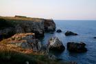
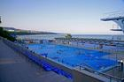
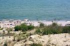
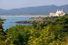
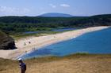
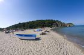

Bulgarian beaches
Note: During the distant 2007 Peter, my best friend, and I decided to travel around Bulgaria's Black Sea coast, take photos and make this site. This is a precious memory and archive from back then.
Bulgaria is a popular destination for summer holidays. Its seaside is long 378 km and includes thousands of beaches. That's what this site is all about - the beautiful Bulgarian beaches. Here you will find everything from beautiful virgin beaches to highly commercialized resorts. Unfortunately, the Bulgarian beaches are ruined by the reckless business. Many of the photos here will probably remain just memories...

Durankulak
Krapets (aka Krapec)
Shabla- 
Tulenovo 
Kamen Bryag
Rusalka
Kaliakra
Kavarna
Balchik
Albena and Kranevo
Golden Sands
Riviera
Konstantin and Elena
Evksinograd- 
Varna - 
Galata and Priboy 
Kamchia
Shkorpilovtzi
Byala
Kara Dere (Karadere)
Obzor
Irakli and Emona
Elenite
Sveti Vlas
Sunny Beach
Nesebar
Ravda
Pomorie
Burgas
Gradina
Sozopol
Kavatzi and Smokinya- 
Duni 
Ropotamo
Primorsko
International Youth Center - Primorsko
Kiten
Lozenetz
Arapya
Tsarevo
Varvara
Ahtopol- 
Sinemorets - 
Silistar 
Rezovo